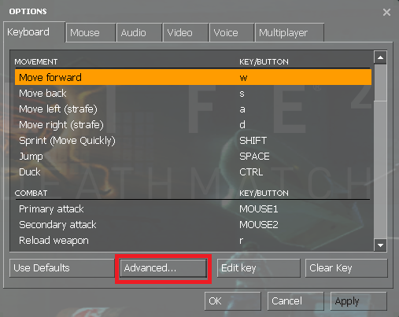

Hi!
We would like to show you menus or other dialogs.
Valve have prevented servers from doing so since 2018 by adding a hidden option.
We therefore ask you to re-enable this functionality by following the guide below.
1. Press ESC
2. Click Options
3. Click Advanced...

4. Check "Enable developer console" if it's unchecked and hit OK
5. Press ~ (tilde)
6. Copy & paste cl_showpluginmessages 1 and hit ENTER
Done, Thanks!